TPP: Transparent Page Placement for CXL-Enabled Tiered-Memory
This page was written by an AI model to give a high-level overview of the paper. Please check the paper for detail: ACM Digital Library.
Memory has become one of the most expensive parts of a hyperscale server: Meta's own fleet data shows memory's share of rack power and cost climbing across six hardware generations. DRAM-only server design makes this worse, because each DRAM generation only offers a handful of fixed bandwidth-capacity points, forcing operators to buy more capacity than they need just to get enough bandwidth. Compute Express Link (CXL) offers a way out. It is a coherent, cache-line-granular interconnect that lets a CPU attach a second, CPU-less memory node ("CXL-Memory") with its own bandwidth, capacity, and technology profile, independent of what the CPU's own memory controller supports. The catch is that Linux's memory management was built for one homogeneous pool of CPU-attached DRAM; naively letting pages land anywhere across a fast local tier and a slower CXL tier can erase CXL's benefit entirely.
Existing options for tiering fall into two unsatisfying camps. Fine-grained user-space or PEBS-based profilers can characterize hotness accurately but cost too much CPU (15%+ per core in prior tools) to run continuously fleet-wide. Idle Page Tracking and page-poisoning schemes need frequent access-bit clears and TLB flushes that the paper says cause "unacceptable slowdowns," and Thermostat's workaround (tracking only at 2 MB granularity) breaks for workloads that use ordinary 4 KB pages. Stock Linux NUMA Balancing (AutoNUMA) promotes a page the instant it takes one remote-access hint fault, with no check that the access was anything more than a fluke, and it demotes only by falling back to on-demand swap once a node is full, stalling allocation in the critical path. AutoTiering migrates for demotion but reserves a static buffer for promotion that saturates under bursty access. And swap-based tiering, including Meta's own TMO, is the wrong abstraction for CXL specifically: every access to a swapped-out page becomes a major fault that reads back a whole page, throwing away CXL's actual advantage, cache-line load/store access at roughly DRAM-plus-50-to-100ns latency.
TPP's idea is to keep tiering entirely inside the kernel's existing page-management machinery and to move pages by NUMA migration rather than swap, so CXL-Memory stays part of main memory with full load/store semantics. Three concrete design choices follow directly from a large-scale characterization study the authors ran on Meta's production fleet with their own lightweight profiler, Chameleon: demote asynchronously from the local node's inactive LRU list well before the node is actually full, decouple "when reclamation stops" from "when new allocation may proceed" so that bursty, short-lived, hot allocations are never starved waiting on a slow reclaimer, and only promote a page out of CXL-Memory once it looks hot on two separate NUMA hint faults, not one.
Mechanically: a background reclaimer on the local node migrates (not swaps) candidates to the nearest CXL node once free memory drops below a demotion watermark, while new allocations keep succeeding locally as long as free memory stays above a separate, lower allocation watermark , decoupling the two paths. On the promotion side, TPP restricts NUMA Balancing's sampling to pages that already live in CXL-Memory; a hint fault on a page sitting in the inactive LRU list only moves it to the active list, and the page is promoted to local memory only if it is found in the active list on a subsequent fault. An optional page-type-aware policy sends file-cache and tmpfs pages preferentially to CXL-Memory, since the characterization study found file pages run colder than anonymous pages on average.
Running on Linux v5.12 (with most of the mechanism later merged upstream starting in v5.18) on pre-production x86 CXL 1.1 hardware with four live production workloads at Meta, TPP comes within <1% of an idealized baseline that keeps the entire working set in local DRAM, beats stock Linux by up to 18%, and beats NUMA Balancing and AutoTiering by 5–17%, including in a stress configuration where local DRAM is only 20% of the working set.
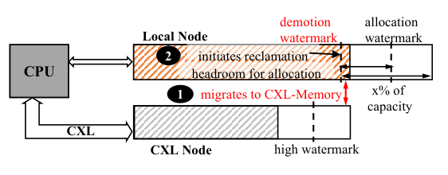
Key takeaways
- CXL turns a second, CPU-less memory node into an extension of main memory with cache-line access. TPP is the application-transparent Linux kernel mechanism, now partly upstream, that decides which pages live on which tier.
- Demotion uses NUMA migration, not swap, so CXL-Memory keeps load/store semantics; candidates are drawn from the local node's inactive LRU list so hot, newly allocated pages are left alone.
- Two separate watermarks decouple "stop reclaiming" from "allow new allocation," so bursty, short-lived, hot allocations never have to wait on a slow reclaimer.
- Promotion reuses Linux's NUMA Balancing hint-fault mechanism but adds an active-LRU filter: a page must look hot on two separate faults before it is pulled back to local memory, cutting unnecessary promotion/demotion ping-pong.
- On Meta's CXL 1.1 fleet hardware, TPP matches an all-local baseline within 1%, beats default Linux by up to 18%, and beats NUMA Balancing/AutoTiering by 5–17%.
From a fleet-wide measurement study to a kernel tiering mechanism
What CXL changes, what Chameleon found in production, the three design questions TPP had to answer, and each of its four mechanisms.
1 · CXL and the case for tiered memory
Today's servers couple compute and memory tightly: a CPU's memory controller only talks to a fixed number of DRAM generations and capacities at power-of-two granularity, and bandwidth-per-capacity points are limited, so operators over-buy capacity just to get bandwidth. CXL (Compute Express Link) is an open interconnect built on PCIe that gives a CPU a cache-line-granular, coherent, load/store path to a second, CPU-less memory node, independent of the CPU's own DRAM generation. The OS sees this CXL-attached memory as an ordinary CPU-less NUMA node. The paper's vendor contacts put CXL-Memory access latency in the same ballpark as cross-socket NUMA access on a dual-socket machine (roughly 170–250 ns versus a local 80–140 ns), with about 50–100 ns of extra latency over local DRAM, and PCIe 5.0-era CXL links (64 GB/s per x16 link) in the same range as cross-socket interconnect bandwidth (32 GB/s per link). That combination, DRAM-like semantics at a NUMA-like latency penalty, is what makes CXL-Memory a credible slow tier rather than a disk-like device.
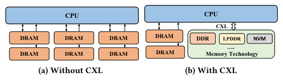
2 · Why memory tiering is worth the engineering effort
The motivation is economic as much as architectural. Across six generations of Meta's server hardware, memory's share of rack-level power rose from about 14.6% to 33.3% and its share of rack TCO rose from about 15.6% to 37.1%. At the same time, available bandwidth-per-capacity points grow in large, discrete jumps per DRAM generation (roughly 1× to 16× in capacity but only up to 3.6× in bandwidth across the generations the paper tracked), which forces capacity over-provisioning just to reach a bandwidth target. CXL breaks that coupling by letting capacity and technology scale independently of the CPU socket, but only pays off if the OS actually keeps hot data off the slow tier.
3 · Chameleon: a profiler cheap enough to run continuously
Before building a placement mechanism, the authors needed to know how much of a real application's memory is actually cold, and for how long. Existing Idle Page Tracking tools require clearing access bits and flushing TLB entries at high frequency, which the paper measured at 20–90% overhead on multi-GB working sets; PEBS-based user-space profilers used in prior work cost over 15% CPU per core. Chameleon is the authors' own lightweight alternative, built to run on a small sample of live production servers for hours without disrupting the application. It has two threads: a Collector that uses the CPU's PEBS mechanism to sample last-level-cache-missed loads (and optionally store-side TLB misses) at a configurable rate (one sample per 200 events by default), rotating which group of CPU cores is sampled every 5-second mini-interval to trade off accuracy against overhead; and a Worker, running on a separate thread, that turns samples into a per-page 64-bit activity bitmap (one bit per interval, left-shifted each minute) and optionally resolves each sampled virtual page to its physical page via /proc/pid/pagemap. The two threads ping-pong between two hash tables so the Collector never blocks on the Worker's analysis. In production, Chameleon cost only 3–5% of one core; on a CPU-saturating synthetic benchmark that had to contend with Chameleon for cores, the authors measured a 7% throughput hit.
4 · What Chameleon found in production
Run across four service domains at Meta (a web-serving VM, a distributed object cache, a batch data-processing engine, and ML ad-serving), Chameleon showed that even though these workloads allocate 95–98% of a server's memory, only 22–80% of that allocation is actually touched within any two-minute window; for the batch data-warehouse workload, which touches almost all allocated memory over longer spans, only about 20% is hot within a two-minute window. Anonymous pages (heap, stack, mmap) run meaningfully hotter than file-backed pages: for the web workload, 35–60% of allocated anonymous pages were hot within two minutes versus only 3–14% of file pages, though the gap narrows or reverses for cache services that rely on file-backed tmpfs for lookups. Usage of anon versus file memory was mostly steady over an application's lifetime rather than constantly shifting, and the fraction of cold pages that get re-accessed later (rather than staying cold forever) varies sharply by workload: about 80% of a web or cache service's cold pages are re-touched within ten minutes, while for the batch workload only about 20% of hot file pages were previously accessed, meaning most "hot" data there is freshly allocated, not reheated.
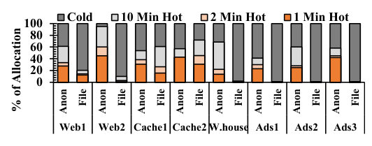
5 · Three design questions TPP had to answer
- Where should the mechanism live? A user-space Chameleon-like daemon issuing
move_pages()calls would need its own page-history bookkeeping and pays repeated user/kernel context-switch costs; the authors judged that acceptable for a short-lived profiling tool but not for an always-on, fleet-wide mechanism, so TPP is implemented entirely in the kernel. - How should the kernel detect temperature? PEBS counters are not standardized across CPU vendors and are limited in number; IPT-style accessed-bit sampling is too slow at high frequency; Thermostat's 2 MB-granularity sampling does not generalize to applications that use base pages. TPP instead reuses two mechanisms Linux already has essentially for free: the existing LRU-based aging for detecting cold pages on the local node, and NUMA Balancing's minor-fault hint mechanism, restricted to CXL-resident pages, for detecting hot pages trapped in the slow tier.
- What abstraction should CXL-Memory present? Using CXL-Memory as a swap device (as TMO's (z)swap pool does) throws away cache-line load/store access: any access to a swapped-out page becomes a major fault that reads back the whole page, pushing effective latency well past CXL's real latency. TPP instead treats CXL-Memory as ordinary, migratable main memory, so warm or cold data there is still accessed with normal loads and stores.
6 · Mechanism 1: lightweight demotion by migration
When a CPU-local memory node fills up, default Linux reclamation pages data out to a swap device, which is orders of magnitude slower than NUMA migration and halts new local allocation until enough pages are freed. TPP's reclaimer instead puts demotion candidates into a separate list and migrates them asynchronously to the nearest CXL node. Candidates are drawn by scanning the local node's inactive anon LRU list (not the active list), which keeps the odds of accidentally demoting a genuinely hot page low unless the hot working set itself exceeds local capacity. If multiple CXL nodes exist, the demotion target is simply the closest one by NUMA distance; if a migration fails (for example, the CXL node is itself low on memory), that page falls back to ordinary swap-based reclamation. CXL-node memory pressure itself is handled by default Linux reclamation, since allocation there is not performance-critical.
7 · Mechanism 2: decoupling allocation from reclamation
Linux normally halts new allocation to a node once free memory drops below a low watermark and only resumes once the reclaimer has pushed free memory back up to a high watermark. Under high allocation pressure, reclamation (even demotion-based reclamation) can't always keep up, so allocations keep spilling onto the CXL node, which is exactly the outcome tiering is meant to avoid. TPP splits this into two independent watermarks: background demotion keeps running until free memory passes a demotion watermark set deliberately above the ordinary low watermark, while new allocation is allowed to proceed locally as long as free memory stays above a separate, lower allocation watermark. This keeps a standing headroom of free local pages available for two purposes: absorbing short-lived, hot allocation bursts (typically tied to request processing) directly into local memory, and giving promoted CXL pages somewhere to land. The aggressiveness of background demotion is tunable via a sysctl, /proc/sys/vm/demote_scale_factor, defaulting to 2% of local capacity.
8 · Mechanism 3: promotion with an active-LRU filter
TPP reuses Linux's existing NUMA Balancing (AutoNUMA): a background task periodically samples a slice of a process's pages (256 MB by default) per node, and an access from a remote CPU triggers a minor "NUMA hint" fault that can promote the page. TPP restricts this sampling to CXL-resident pages only (promoting a local node's own hot pages to another node makes no sense in this setup) and, when promoting into the target local node, ignores that node's allocation watermark, deliberately creating a bit of local memory pressure so the promoted page has room.
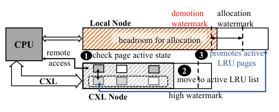
Default NUMA Balancing promotes on the very first hint fault, which lets infrequently accessed pages get promoted, demoted again shortly after, and generate wasted migration traffic in both directions ("ping-pong"). TPP instead checks the faulted page's position in the kernel's existing active/inactive LRU list: a fault on a page already in the active list is treated as a real promotion candidate, while a fault on a page still in the inactive list only moves it to the active list and marks it accessed, without migrating it yet. If the page faults again while still active, it is promoted on that second fault. This adds one fault's worth of hysteresis before any migration happens, and because Linux keeps separate LRU lists for anon and file pages, the two page types naturally converge to appropriately different promotion rates.
9 · Page-type aware allocation, observability, and deployment
An optional policy lets applications' page-cache allocations (file cache, tmpfs) be steered preferentially to the CXL node from the moment they are created, while anonymous-page allocation policy is left unchanged; a cache page that becomes hot enough still gets promoted normally later. This helps applications that are dominated by comparatively cold caches run well even with a small local tier. For debugging and capacity planning, TPP adds counters (exposed through /proc/vmstat) for successfully demoted anon/file pages, sampled pages, promotion attempts and successes per page type, and promotion failure reasons (low memory on the target node, abnormal page references, system-wide low memory). A repurposed page-flag bit, PG_demoted, is set when a page is demoted and cleared on promotion, letting the kernel count how often a demoted page becomes a promotion candidate again, a direct ping-pong signal. TPP was implemented and evaluated on Linux v5.12; the authors state that most of its patches were merged upstream in Linux v5.18, with the rest pending further kernel-community discussion. See the Evaluation tab for all measured results.
Evaluation
Production workloads on pre-production CXL 1.1 hardware, compared against default Linux, NUMA Balancing, AutoTiering, and TMO.
TPP is evaluated on pre-production x86 CPUs with an FPGA-based CXL 1.1 memory-expansion card, which exposes CXL memory as a CPU-less NUMA node; because that card has about 250 ns more latency than the target production hardware, the authors use it only for functional validation. For performance numbers they instead reconfigure dual-socket servers (one socket's CPUs and memory disabled) to emulate the target CXL system's latency/bandwidth profile, following guidance from two CPU vendors who confirmed CXL-Memory access latency is comparable to cross-socket NUMA latency. No experiment involves swapping to disk; the system always has enough total memory for the workload.
| Setup element | As used in the paper |
|---|---|
| Platform | Pre-production x86 CPUs with CXL 1.1 FPGA memory-expansion card (functional validation); dual-socket servers reconfigured to emulate target CXL latency/bandwidth (performance measurement) |
| Workloads | Web1 (HHVM web VM), Cache1 / Cache2 (distributed object caching over tmpfs), Data Warehouse (batch query engine); all serving live production traffic |
| Configurations | 2:1 local:CXL capacity ratio (current production target) and 1:4 (memory-expansion stress test) |
| Baselines | Default Linux, NUMA Balancing (AutoNUMA), AutoTiering; TMO evaluated separately as a complementary (not competing) mechanism |
| Metrics | Application-level throughput normalized to an all-local-memory baseline; fraction of memory accesses served from the local node |
| Kernel | Linux v5.12, with most TPP patches later merged upstream starting v5.18 |
TPP matches an all-local baseline within 1%, and beats every other mechanism tested
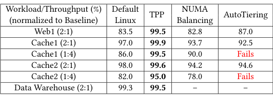
What it shows. Table 1 gives throughput normalized to the all-local baseline for Default Linux, TPP, NUMA Balancing, and AutoTiering across workloads and configurations. TPP ranges from 95.0% (Cache2, 1:4) to 99.9% (Cache1, 2:1). Default Linux ranges from 82.0% to 99.3%. NUMA Balancing ranges from 78.0% to 94.2%. AutoTiering reaches 87.0–94.6% on the 2:1 configurations it can run, and fails outright on both 1:4 configurations tested (Cache1 and Cache2).
What to take from it. The paper's companion time-series figure (Figure 19, not reproduced in this summary) shows why: on Web1 at 2:1, NUMA Balancing serves only 20% of traffic from local memory (throughput −17.2%) because its reclamation is 42× slower than TPP's and its promotion 11× slower, plus it adds about 2% extra system-wide CPU overhead from unfiltered sampling; AutoTiering ends up serving 70% of traffic from the CXL node (throughput −13%) because its fixed-size promotion buffer saturates under bursty access. On Cache1 at 1:4, NUMA Balancing serves only 46% of traffic locally (−10%), and AutoTiering cannot even complete the run, crashing after warm-up; evaluated instead on the easier 2:1 configuration, it still trails TPP's 1:4 result by 10 percentage points of local traffic and 7% throughput. TPP's advantage holds even when its own task (1:4) is strictly harder than its competitors' (2:1).
TPP keeps most traffic local across four live workload types
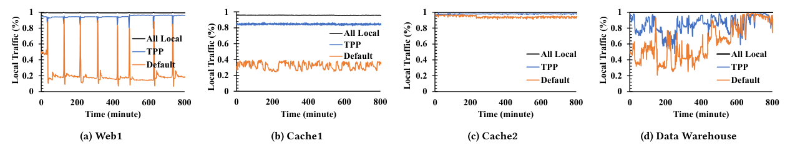
What it shows. Figure 14 plots the fraction of memory accesses served from the local node over roughly 800 minutes for Web1, Cache1, Cache2, and Data Warehouse, comparing an all-local ceiling, TPP, and default Linux. For Web1, default Linux serves only 22% of accesses locally (because slow reclamation during file-I/O-heavy startup starves anon allocation onto CXL, causing a 16.5% throughput drop), while TPP reaches 90% local traffic with only a 0.5% drop. For Cache1, default Linux already does reasonably well (only 8% of hot pages trapped in CXL, a 3% throughput hit); TPP closes nearly all of that gap (99.9% of baseline throughput). For Cache2, default Linux serves 78% of accesses locally (−2%), and TPP raises that to 91% (−0.4%). For Data Warehouse, TPP raises the fraction of local anon pages from 67% (default) to 94%, giving 4% more local-node traffic than default Linux, though throughput is similar either way (−0.5 to −0.7%) because this workload is not memory-constrained in the 2:1 configuration.
What to take from it. TPP's benefit scales with how memory-constrained and bursty the workload's allocation pattern is: it matters most for Web1 (bursty, I/O-heavy startup) and least for Data Warehouse, which was never far from the baseline to begin with.
TPP still works when local memory is only a fifth of the working set
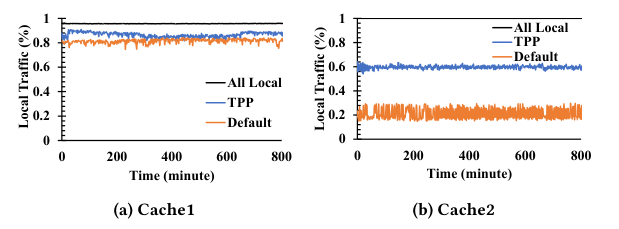
What it shows. Figure 15 repeats the local-traffic-over-time measurement for Cache1 and Cache2 under the stress-test 1:4 local:CXL configuration. For Cache1, default Linux traps 85% of anon pages in CXL (−14% throughput); TPP moves 97% of hot anon pages back to local memory, serves 85% of total accesses locally, and loses only 0.5% throughput. For Cache2, default Linux keeps only 14% of anon pages local (−18% throughput); TPP recovers 80% of anon pages to local memory, but because Cache2 accesses a lot of its (now mostly CXL-resident) cache data, 41% of its traffic still comes from the CXL node, yet throughput loss is only 5%.
What to take from it. Even with local DRAM cut to roughly 20% of the working set, TPP keeps throughput within 0.5–5% of the all-local baseline, showing the mechanism degrades gracefully rather than collapsing under aggressive memory-capacity expansion via CXL.
TPP is largely insensitive to how slow the CXL tier actually is
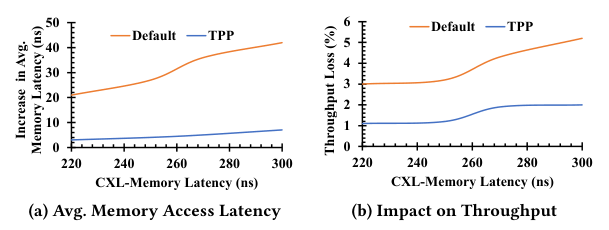
What it shows. Running Cache2 at 2:1 with CXL-Memory latency swept from roughly 220 ns to 300 ns, Figure 16 plots the increase in average memory-access latency and the throughput loss for both default Linux and TPP. Across the whole latency range, TPP leaves only 4–5% of hot pages stuck in the CXL node, versus 22–25% for default Linux. As a result, default Linux's average memory-access latency increases about 7× more than TPP's, and default Linux's throughput loss is 2.2–2.8× higher than TPP's across the swept range.
What to take from it. Because TPP's promotion mechanism keeps the CXL residency fraction low and fairly constant regardless of the CXL tier's actual latency, its performance is robust to the exact memory technology or generation used for the slow tier, not just to one measured latency point.
Decoupling allocation and reclamation is what keeps promotion alive under pressure
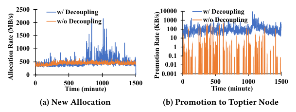
What it shows. Using Cache1 at 1:4 as a case study, Figure 17 compares allocation rate and promotion rate over time with and without TPP's watermark decoupling. Without decoupling, local allocation rate is capped by the (slower) reclamation rate; with decoupling, the 95th-percentile local allocation rate rises 1.6×. Without decoupling, promotion nearly halts, since the target local node is immediately low on memory again right after serving an allocation burst, letting trapped CXL pages generate 55% of memory traffic and a 12% throughput drop. With decoupling, promotion sustains a steady ~50 KB/s average, bursting up to 1.2 MB/s at the 99th percentile, and throughput matches the baseline.
What to take from it. The two-watermark design is not a minor tuning knob; without it, promotion effectively stops working under sustained memory pressure, which is exactly the regime tiered memory is meant to help with.
Filtering promotion by LRU activity cuts ping-pong traffic without hurting convergence much
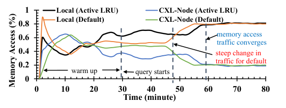
What it shows. Also on Cache1 at 1:4, Figure 18 compares memory-access traffic over time for local and CXL nodes with and without the active-LRU promotion filter. Adding the filter reduces the overall page-promotion rate by 11× and halves the rate at which demoted pages get re-promoted shortly after (the ping-pong metric), while reducing the demotion rate by only 4%. Promotion success rate improves 48%, local-node memory-access share improves 4%, and throughput improves 2.4%. The cost is that local traffic takes about five extra minutes to reach its peak, compared to running without the filter.
What to take from it. Adding one fault's worth of hysteresis before promoting trades a small amount of convergence speed for a large reduction in wasted migration traffic and a net throughput gain, which the paper judges a clearly favorable trade for a continuously running production mechanism.
Page-type-aware allocation lets a small local tier still serve nearly all hot traffic
What it shows. Table 2 reports the fraction of memory-access traffic served from the local versus CXL node, and throughput relative to baseline, when file-cache/tmpfs allocations are steered to CXL-Memory from creation. Web1 at 2:1 serves 97% locally / 3% from CXL (99.5% of baseline throughput); Cache1 at 1:4 serves 85% / 15% (99.8%); Cache2 at 1:4 serves 72% / 28% (98.5%).
What to take from it. Steering cold cache allocations away from local memory from the start, rather than waiting for the general demotion path to catch up to them, helps applications whose local tier is small relative to their working set hold throughput within 0.2–2.5% of baseline, without requiring any additional detection latency.
TPP and TMO (memory offloading) are complementary, each improving the other
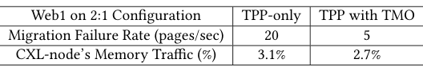
What it shows. On Web1 at 2:1, running TPP together with TMO (rather than TPP alone) reduces TPP's page-migration failure rate from 20 to 5 pages/sec and lowers CXL-node memory traffic from 3.1% to 2.7% (Table 3), because TMO's reclamation frees up headroom that makes TPP's migrations more likely to succeed. In the other direction (Table 4, not shown as a figure here but stated in the text), running TMO together with TPP reduces TMO's process-stall metric (normalized to its threshold) from 70% to 40% and raises TMO's memory saving from 13.5% to 16.5% of total capacity, about 2 GB in absolute terms, because TPP turns TMO's (z)swap-out into a two-stage demote-then-swap process that gives semi-hot pages a second chance before they are actually swapped.
What to take from it. TPP (page placement between local and CXL memory) and TMO (feedback-driven reclamation to free capacity) operate at different layers and reinforce each other; the paper explicitly treats them as complementary rather than competing systems, unlike NUMA Balancing and AutoTiering, which TPP replaces outright.
FAQ
Q·What problem is TPP actually solving?▾
Once a server has both fast CPU-attached DRAM and a slower CXL-attached memory node, something has to decide which pages go where. Put the wrong pages on the slow tier and application throughput drops; TPP is the Linux kernel mechanism that makes that placement decision automatically, without any application changes, and keeps performance close to a system where everything lived in fast DRAM.
Q·What is CXL, in plain terms?▾
Compute Express Link is an interconnect, built on PCIe, that lets a CPU access a second memory module with ordinary cache-line-granular loads and stores, the same way it accesses its own DRAM, but at somewhat higher latency (roughly 50–100 ns more, per the paper) and with no requirement that the memory technology, capacity, or generation match the CPU's own DRAM.
Q·Linux already has NUMA Balancing (AutoNUMA). Why isn't that enough?▾
NUMA Balancing promotes a page to local memory the instant it takes one remote-access hint fault, with no check on whether that access was representative, and it demotes cold pages only by falling back to on-demand swap once a node fills up, which stalls new allocation. TPP reuses NUMA Balancing's fault mechanism for promotion but gates it behind an active-LRU check (promote only after two faults, not one), and replaces swap-based demotion with proactive, migration-based demotion from the inactive LRU list, triggered before the node is actually full.
Q·How is TPP different from AutoTiering?▾
AutoTiering also migrates for demotion and uses NUMA Balancing-style promotion, but it keeps a fixed-size reserved buffer to support promotion under memory pressure. That buffer saturates during a surge in CXL-node accesses, at which point promotion fails and performance degrades; the paper measured a 13% throughput drop on Web1 and an outright crash on a more memory-constrained configuration. TPP avoids a fixed buffer by decoupling allocation and reclamation with two independently tunable watermarks instead.
Q·Why not just treat CXL-Memory as swap space, the way TMO does?▾
Swapping a page out means every subsequent access to it is a major page fault that reads the whole page back from the slow device before the access can complete. That throws away the very thing that makes CXL attractive, cache-line load/store access, and pushes effective latency for any still-needed data far past CXL's actual ~170–250 ns. TPP instead migrates pages between tiers, so a CXL-resident page is still read and written with ordinary loads and stores; it just happens to be slightly slower.
Q·Can TPP and TMO be used together, or are they competitors?▾
The paper treats them as complementary. TMO frees up memory capacity fleet-wide through feedback-driven reclamation; TPP decides where capacity-constrained pages should physically live. Measured together on Web1, TMO's extra free headroom reduced TPP's migration failures, and TPP turned TMO's swap-out into a two-stage demote-then-swap process that improved TMO's own memory savings and reduced its process-stall metric.
Q·What is Chameleon, and why build a new profiler instead of reusing an existing one?▾
Chameleon is the authors' own lightweight, user-space tool for measuring how hot or cold an application's memory really is, using the CPU's PEBS sampling mechanism at a low, duty-cycled rate. It exists because Idle Page Tracking is too slow at the sampling rates needed for accuracy, and prior PEBS-based tools cost over 15% CPU per core; Chameleon was built to run on live production servers at only 3–5% of one core, specifically so Meta could measure the opportunity for tiering before committing to build TPP.
Q·How does TPP decide a page is actually hot enough to promote?▾
It samples CXL-resident pages using NUMA Balancing's existing minor-fault mechanism, but instead of promoting on the first fault, it checks the page's position in the kernel's active/inactive LRU list. A fault on an inactive-list page just moves it to the active list (a "maybe" signal); only a subsequent fault while still in the active list actually triggers promotion. This two-fault hysteresis is what the paper credits with an 11× reduction in promotion traffic.
Q·Why does TPP decouple allocation from reclamation instead of using Linux's existing watermarks?▾
Linux ties "can new allocation happen" directly to "has reclamation finished," so under bursty allocation pressure, new (often hot, short-lived) pages get pushed onto the slow tier while reclamation is still catching up. TPP adds a second watermark so background demotion can keep running to maintain a free-memory headroom, independent of whether new local allocation is currently allowed, so short bursts land locally rather than spilling to CXL.
Q·Does TPP require any application changes?▾
No. TPP is entirely kernel-resident and application-transparent; no recompilation, library change, or hint is required. The only optional, still-transparent knob is a page-type-aware allocation policy that steers file-cache and tmpfs pages toward the CXL node from creation.
Q·How does TPP relate to hardware-assisted or application-guided tiering approaches mentioned in the Related Work?▾
The paper positions TPP against two other families: hardware-assisted schemes (e.g., using extra memory-controller counters) and application-guided schemes that require redesigning the application around an explicit hybrid-memory API. Both can scale poorly in a hyperscale fleet with many rapidly changing applications, which is why TPP is deliberately OS-level and transparent instead.
Q·What happens if a migration fails, for example if the CXL node is itself full?▾
TPP falls back to the default reclamation path for that page, i.e., ordinary swap-out, rather than retrying indefinitely. The paper also adds counters, broken out by failure reason (low memory on the target node, abnormal page references, system-wide low memory), so operators can diagnose why promotions or demotions are failing in production.
Q·Is TPP actually deployed, or is this just a research prototype?▾
It was evaluated on Meta's own production fleet hardware and serving live traffic, and the authors state that most of TPP's patches were merged into the upstream Linux kernel starting with v5.18, with the remainder still under kernel-community discussion at the time of writing.
demote_scale_factor.